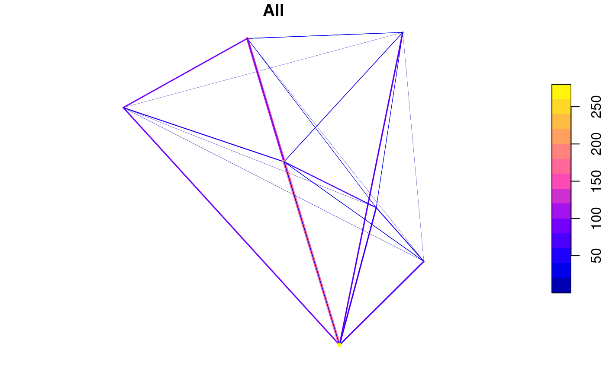

Origin-destination ('OD') flow data is often provided in the form of 1 line per flow with zone codes of origin and destination centroids. This can be tricky to plot and link-up with geographical data. This function makes the task easier.
od2line(flow, zones, destinations = NULL, zone_code = names(zones)[1], origin_code = names(flow)[1], dest_code = names(flow)[2], zone_code_d = NA, silent = FALSE) od2line2(flow, zones)
| flow | A data frame representing the flow between two points
or zones. The first two columns of this data frame should correspond
to the first column of the data in the zones. Thus in |
|---|---|
| zones | A spatial object representing origins (and destinations if no separate destinations object is provided) of travel. |
| destinations | A SpatialPolygonsDataFrame or SpatialPointsDataFrame representing destinations of travel flows. |
| zone_code | Name of the variable in |
| origin_code | Name of the variable in |
| dest_code | Name of the variable in |
| zone_code_d | Name of the variable in |
| silent | TRUE by default, setting it to TRUE will show you the matching columns |
The function expects zone codes to be in the 1st column of the zones/destinations datasets and the 1st and 2nd columns of the flow data, respectively.
od2line2() is a faster implementation
(around 6 times faster on large datasets)
that returns a SpatialLines object, omitting the data and working
only when there is no destinations dataset (i.e. when the geography of
origins is the same as that of destinations).
#> Area.of.residence WZ11CD All Work.mainly.at.or.from.home #> 920573 E02002361 E33010350 109 0 #> 920575 E02002361 E33010390 38 0 #> 920578 E02002361 E33010468 10 0 #> 920582 E02002361 E33012367 44 0 #> 920587 E02002361 E33012225 34 0 #> 920591 E02002361 E33012368 7 0 #> Underground..metro..light.rail..tram #> 920573 0 #> 920575 0 #> 920578 0 #> 920582 0 #> 920587 0 #> 920591 0#> class : SpatialPointsDataFrame #> features : 6 #> extent : -1.540901, -1.492713, 53.80131, 53.81724 (xmin, xmax, ymin, ymax) #> coord. ref. : +init=epsg:4326 +proj=longlat +datum=WGS84 +no_defs +ellps=WGS84 +towgs84=0,0,0 #> variables : 5 #> names : WZ11CD, LAD11CD, COWZEW_SG, COWZEW_SGN, COWZEW_G #> min values : E33010351, E08000035, 2, Manufacturing and distribution, 2c #> max values : E33012352, E08000035, 7, Top jobs, 7cl <- od2line(flow, zones_sf)#>#> Warning: st_centroid assumes attributes are constant over geometries of x#> Warning: st_centroid does not give correct centroids for longitude/latitude data